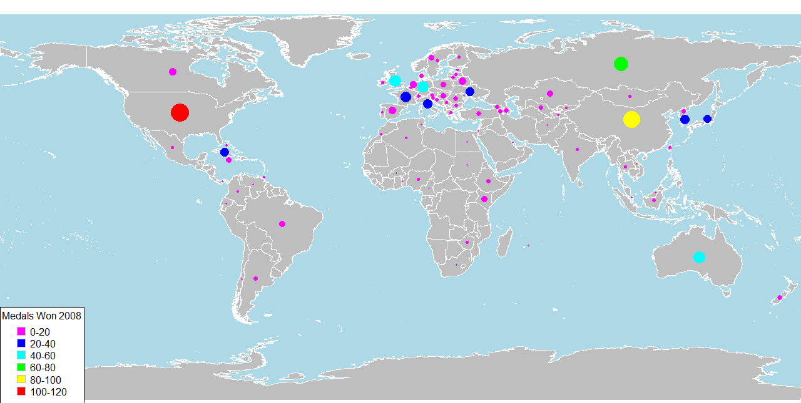
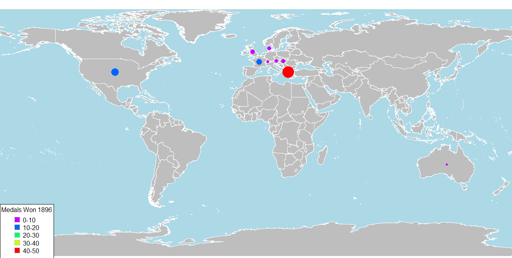

Ah the olympics, an ancient assembly of skill, strength, emotion and controversy. See some of the images below:
Where true sportsmanship shines bright
When things are going bad but you have a great attitude
Where dreams come true
Failures only prepare you for success
And, sighs where there are embarassing displays as well
Disgrace of Egyptian judo player
It might seem obivious that there are socio-economic factors that impact a country's ability to bring home gold, or to produce someone like Michael Phelps who can bring home enough gold for more than a few countries. Is there a direct relationship between the amount of medals won and the money put into the respective country's olympic program (if such a thing exists)? Are there factors other than just the obivious socio-economic ones? .
As an aspiring data-scientist I have read time and again that ETL is approx 75% of the work we do. But even then, thats when the data is readily available. IF you have to go scavenging for it, I refer you to a great tutorial on webscraping using python. From here I will begin with a simple excercise in visualizing the data that is available from olympics.org. Eventually, if I can obtain more data on individual athletes (age, weight) etc I will go deeper.
Data Visualization
Disclaimer: A minor few of the winning countries were not included in some of the charts because the names weren't read properly due to changes in formatting. I'll fix that soon. These plots were create in R using the rworldmap package. The first modern olympic games was hosted at the Panathenaic Stadium in Athens in 1896. Here is the distribution of the medals won in that Olympic games.
For immediate comparison here below are the winning countries from the 2008 olympic games:
112 years makes quite a difference. But was the change gradual? Sudden? Are there specific events that triggered a change? To see the change more effectively, here's a gif:
A more indepth look is required.